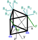
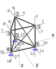
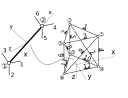

Aplicação na mão
Bom, agora que conhecemos a matriz de rigidez do elemento de treliça tridimensional no sistema global, é hora de voltar à parte do módulo da torre de comunicação e resolvê-la na mão, lembrando que essa treliça possui barras de aço ASTM A36 ($E = 200 GPa$), três barras verticais com seção transversal tubular de 40 mm de diâmetro e 5 mm de espessura, seis horizontais (três acima e três abaixo) com seção transversal tubular de 32 mm de diâmetro e 5 mm de espessura e três diagonais com seção maciça tubular de 16 mm de diâmetro. As cargas F são relativas ao vento e valem 111,16 N e as cargas R, relativas as reações de apoio do resto do módulo sobre essa parte valem $R_1 = 194,809 N$, $R_2 = 780,704 N$, $R_3 = 337,41 N$, $R_4 = 194,809 N$, $R_5 = 1561,41 N$, $R_6 = 337,41 N$ e $R_7 = 780,704 N$, seguindo o sentido mostrado na figura. As coordenadas dos nós e os comprimentos das barras horizontais e verticais são mostrados nas figura.
 Parte do módulo da torre, dimensões e coordenadas.
Parte do módulo da torre, dimensões e coordenadas.
 Parte do módulo da torre.
Primeiro, vamos descrever todos os graus de liberdade globais da estrutura em nossa treliça idealizada em um diagrama de corpo livre, assim como numerar seus nós e suas barras.
 Graus de liberdade da treliça.
A numeração dos nós, barras e graus de liberdade pode ser qualquer, porém, por questões práticas de implementação computacional sempre iniciam em 1, nunca pula-se um número e para os graus de liberdade numeram-se primeiro as direções com graus de liberdade livre, ou seja, direções as quais os apoios não influenciam, exatamente como a treliça plana.
Sobre essa numeração, vamos descrever a numeração dos graus de liberdade através da matriz de graus de liberdade, $\textbf{GL}$. Relembrando, na matriz contamos as linhas como sendo a numeração dos nós, ou seja, a linha 1 é relativa ao nó 1, a 2 ao nó 2 e assim por diante, e as colunas relativas às direções cartesianas, ou seja, no plano a coluna 1 é $X$, a coluna 2 é $Y$ e a coluna 3 é $Z$. Então populamos essa matriz com os números dos graus de liberdade relativos à cada nó (linhas da matriz) de acordo com cada direção cartesiana (colunas da matriz), ou seja, para a parte do módulo da torre:
$$ \textbf{GL} = \begin{array}{cc} X \hspace{10pt} Y \hspace{10pt} Z \hspace{20pt} & \\ \left[ \begin{array}{ccc} 1 & 2 & 3\\ 4 & 5 & 6\\ 7 & 8 & 9\\ 10 & 11 & 12\\ 13 & 14 & 15\\ 16 & 17 & 18\\ \end{array} \right] \begin{array}{c} \text{nó 1} \\ \text{nó 2} \\ \text{nó 3} \\ \text{nó 4} \\ \text{nó 5} \\ \text{nó 6} \\ \end{array} \end{array}$$
Na sequência precisamos explodir a estrutura divindindo-a em elementos de treliça tridimensional, numerar esses elementos e a cada elemento descrever os graus de liberdade locais. A numeração dos nós do elemento é fundamentada no utilizado para sua formulação, como foram dois, sempre teremos nós 1 e 2.
 Graus de liberdade dos elementos.
A numeração dos graus de liberdade nesse caso é fixa a numeração do nó no elemento, pois foi seguindo essa ordem que derivamos a matriz de rigidez. Portanto, para o nó 1, o grau de liberdade longitudinal à barra é o 1, o perpendicular 2 em Y, o transversal 3 em Z, para o nó 2, o longitudinal é o 4, o perpendicular 5 em Y e o transversal 6 em Z. O que podemos variar é quem será o nó 1 ou 2 dos elementos quando posicionados na estrutura. Sua posição implica na direção do eixo x local para a definição dos cossenos diretores da matriz de rotação tridimensional e consequente matriz de rigidez do elemento no sistema global.
Lembre-se que já transformamos os graus de liberdade locais em globais, por isso eles já estão orientados de acordo com os eixos globais, mas os eixos locais ainda permanecem pois precisamos dos cossenos diretores.
A relação dos nós locais dos elementos com os globais da estrutura é feita através da matriz de incidência do elemento, $\textbf{IE}$, na qual as linhas representam os números dos elementos, a primeira coluna representa o nó na estrutura escolhido para o posicionamento do nó 1 do elemento e a segunda coluna do nó na estrutura para o posicionamento do nó 2 do elemento. Portanto, para o nosso caso, a matriz $IE$ fica:
$$ \textbf{IE} = \begin{array}{cc} \text{nó 1} \hspace{3pt} \text{nó 2} \hspace{40pt} & \\ \left[ \begin{array}{cc} 1 & 2 \\ 2 & 3 \\ 3 & 1 \\ 4 & 1 \\ 5 & 2 \\ 6 & 3 \\ 4 & 2 \\ 5 & 3 \\ 6 & 1 \\ 4 & 5 \\ 5 & 6 \\ 6 & 4 \\ \end{array} \right] \begin{array}{c} \text{elemento 1} \\ \text{elemento 2} \\ \text{elemento 3} \\ \text{elemento 4} \\ \text{elemento 5} \\ \text{elemento 6} \\ \text{elemento 7} \\ \text{elemento 8} \\ \text{elemento 9} \\ \text{elemento 10} \\ \text{elemento 11} \\ \text{elemento 12} \\ \end{array} \end{array}$$
Com a matriz de incidência completa e as coordenadas dos nós da estrutura no sistema global, já podemos calcular todos os cossenos diretores para a definição da matriz de rigidez dos elementos no sistema global.
Calma aí!!! Vou precisar calcular 9 cossenos diretores para cada um dos 12 elementos... ou seja, 108 cossenos diretores diferentes?! Na mão?! Claro que não, primeiro que a matriz de rigidez é apenas função dos cossenos diretores do eixo x local e depois... vamos pensar um pouquinho...
Observe que nossa estrutura tem 9 graus de liberdade livres dos 18 totais, isso significa que para resolvermos os deslocamentos precisamos de um pedaço da matriz de rigidez da estrutura relativa a esses 9 graus de liberdade. Associados a esses 9 graus de liberdade livres temos os elementos 1, 2, 3, 4, 5, 6, 7, 8 e 9, portanto, para esses precisamos calcular os cossenos diretores.
Podemos criar uma matriz de coordenadas dos nós da estrutura, $\textbf{COO}$, para agilizar o processo de cálculo, sendo as colunas representativas das coordenadas globais X, Y e Z e as linhas representativas dos números dos nós.
$$ \textbf{COO} = \left[ \begin{array}{ccc} 0,25 & 0,1443 & -0,5 \\ 0 & -0,2887 & -0,5 \\ -0,25 & 0,1443 & -0,5 \\ 0,25 & 0,1443 & 0 \\ 0 & -0,2887 & 0 \\ -0,25 & 0,1443 & 0 \\ \end{array} \right]$$
De uma forma genérica para uma barra $b$, o vetor dos cossenos diretores do seu eixo x local no sistema global, $\textbf{C}$ pode ser calculado em função das coordenadas dos seus nós como, utilizando a matriz de incidência $\textbf{IE}$ e a de coordenada dos nós da estrutura $\textbf{COO}$.
$$ \textbf{C}_b = \left\lbrace \begin{array}{c} \dfrac{COO_{IE_{b,2},1} - COO_{IE_{b,1},1}}{L_b} \\ \dfrac{COO_{IE_{b,2},2} - COO_{IE_{b,1},2}}{L_b} \\ \dfrac{COO_{IE_{b,2},3} - COO_{IE_{b,1},3}}{L_b} \\ \dfrac{COO_{IE_{b,1},1} - COO_{IE_{b,2},1}}{L_b} \\ \dfrac{COO_{IE_{b,1},2} - COO_{IE_{b,2},2}}{L_b} \\ \dfrac{COO_{IE_{b,1},3} - COO_{IE_{b,2},3}}{L_b} \end{array} \right\rbrace$$
Sendo, por exemplo, $IE_{b,2}$ o número do nó 2 do elemento $b$ obtido da matriz de incidência e $COO_{IE_{b,2},1}$ a coordenada X do nó 2 do elemento $b$ e $L_b$ o comprimento do elemento $b$, calculado por:
$$ L_b = \sqrt{(COO_{IE_{b,2},1} - COO_{IE_{b,1},1})^2 + (COO_{IE_{b,2},2} - COO_{IE_{b,1},2})^2 + (COO_{IE_{b,2},3} - COO_{IE_{b,1},3})^2}$$
Observe que os cossenos diretores negativos na matriz $\textbf{C}$ são calculados invertendo as coordenadas dos nós inicial com o final. Os positivos calculamos com as coordenadas do nó final menos do nó inicial e os negativos com as do nó inicial menos do nó final.
Primeiro calculamos os comprimentos de cada uma das barras da estrutura em função de suas coordenadas.
$$ \begin{align} L_1 &= \sqrt{(COO_{IE_{1,2},1} - COO_{IE_{1,1},1})^2 + (COO_{IE_{1,2},2} - COO_{IE_{1,1},2})^2 + (COO_{IE_{1,2},3} - COO_{IE_{1,1},3})^2} = \\ L_2 &= \sqrt{(COO_{IE_{2,2},1} - COO_{IE_{2,1},1})^2 + (COO_{IE_{2,2},2} - COO_{IE_{2,1},2})^2 + (COO_{IE_{2,2},3} - COO_{IE_{2,1},3})^2} = \\ L_3 &= \\ L_4 &= \\ L_5 &= \\ L_6 &= \\ L_7 &= \\ L_8 &= \\ L_9 &= \\ L_{10} &= \\ L_{11} &= \\ L_{12} &= \\ \end{align}$$
Então, os vetores com os cossenos diretores de cada barra $\textbf{C}_b$ resultam em:
$$ \textbf{C}_1 = \left\lbrace \begin{array}{c} \dfrac{COO_{IE_{1,2},1} - COO_{IE_{1,1},1}}{L_1} \\ \dfrac{COO_{IE_{1,2},2} - COO_{IE_{1,1},2}}{L_1} \\ \dfrac{COO_{IE_{1,2},3} - COO_{IE_{1,1},3}}{L_1} \\ \dfrac{COO_{IE_{1,1},1} - COO_{IE_{1,2},1}}{L_1} \\ \dfrac{COO_{IE_{1,1},2} - COO_{IE_{1,2},2}}{L_1} \\ \dfrac{COO_{IE_{1,1},3} - COO_{IE_{1,2},3}}{L_1} \end{array} \right\rbrace = \left\lbrace \begin{array}{c} \dfrac{COO_{IE_{1,2},1} - COO_{IE_{1,1},1}}{L_1} \\ \dfrac{COO_{IE_{1,2},2} - COO_{IE_{1,1},2}}{L_1} \\ \dfrac{COO_{IE_{1,2},3} - COO_{IE_{1,1},3}}{L_1} \\ \dfrac{COO_{IE_{1,1},1} - COO_{IE_{1,2},1}}{L_1} \\ \dfrac{COO_{IE_{1,1},2} - COO_{IE_{1,2},2}}{L_1} \\ \dfrac{COO_{IE_{1,1},3} - COO_{IE_{1,2},3}}{L_1} \end{array} \right\rbrace = \left\lbrace \begin{array}{c} 1 \\ 1 \\ 1 \\ 1 \\ 1 \\ 1 \\ \end{array} \right\rbrace$$
$$ \textbf{C}_2 = \left\lbrace \begin{array}{c} \dfrac{COO_{IE_{2,2},1} - COO_{IE_{2,1},1}}{L_2} \\ \dfrac{COO_{IE_{2,2},2} - COO_{IE_{2,1},2}}{L_2} \\ \dfrac{COO_{IE_{2,2},3} - COO_{IE_{2,1},3}}{L_2} \\ \dfrac{COO_{IE_{2,1},1} - COO_{IE_{2,2},1}}{L_2} \\ \dfrac{COO_{IE_{2,1},2} - COO_{IE_{2,2},2}}{L_2} \\ \dfrac{COO_{IE_{2,1},3} - COO_{IE_{2,2},3}}{L_2} \end{array} \right\rbrace = \left\lbrace \begin{array}{c} \dfrac{COO_{IE_{2,2},1} - COO_{IE_{2,1},1}}{L_2} \\ \dfrac{COO_{IE_{2,2},2} - COO_{IE_{2,1},2}}{L_2} \\ \dfrac{COO_{IE_{2,2},3} - COO_{IE_{2,1},3}}{L_2} \\ \dfrac{COO_{IE_{2,1},1} - COO_{IE_{2,2},1}}{L_2} \\ \dfrac{COO_{IE_{2,1},2} - COO_{IE_{2,2},2}}{L_2} \\ \dfrac{COO_{IE_{2,1},3} - COO_{IE_{2,2},3}}{L_2} \end{array} \right\rbrace = \left\lbrace \begin{array}{c} 1 \\ 1 \\ 1 \\ 1 \\ 1 \\ 1 \\ \end{array} \right\rbrace$$
$$ \textbf{C}_3 = \left\lbrace \begin{array}{c} 1 \\ 1 \\ 1 \\ 1 \\ 1 \\ 1 \\ \end{array} \right\rbrace \qquad \textbf{C}_4 = \left\lbrace \begin{array}{c} 1 \\ 1 \\ 1 \\ 1 \\ 1 \\ 1 \\ \end{array} \right\rbrace \qquad \textbf{C}_5 = \left\lbrace \begin{array}{c} 1 \\ 1 \\ 1 \\ 1 \\ 1 \\ 1 \\ \end{array} \right\rbrace \qquad \textbf{C}_6 = \left\lbrace \begin{array}{c} 1 \\ 1 \\ 1 \\ 1 \\ 1 \\ 1 \\ \end{array} \right\rbrace \qquad \textbf{C}_7 = \left\lbrace \begin{array}{c} 1 \\ 1 \\ 1 \\ 1 \\ 1 \\ 1 \\ \end{array} \right\rbrace$$
$$ \textbf{C}_8 = \left\lbrace \begin{array}{c} 1 \\ 1 \\ 1 \\ 1 \\ 1 \\ 1 \\ \end{array} \right\rbrace \qquad \textbf{C}_9 = \left\lbrace \begin{array}{c} 1 \\ 1 \\ 1 \\ 1 \\ 1 \\ 1 \\ \end{array} \right\rbrace \qquad \textbf{C}_{10} = \left\lbrace \begin{array}{c} 1 \\ 1 \\ 1 \\ 1 \\ 1 \\ 1 \\ \end{array} \right\rbrace \qquad \textbf{C}_{11} = \left\lbrace \begin{array}{c} 1 \\ 1 \\ 1 \\ 1 \\ 1 \\ 1 \\ \end{array} \right\rbrace \qquad \textbf{C}_{12} = \left\lbrace \begin{array}{c} 1 \\ 1 \\ 1 \\ 1 \\ 1 \\ 1 \\ \end{array} \right\rbrace$$
E dessa forma, já conseguimos escrever as matrizes de rigidez dos elementos no sistema global, visto que na sua forma condensada ela é calculada para um elemento $b$:
$$ \textbf{k}_{g,b} = \dfrac{E_b A_b}{L_b} \textbf{C}_b \textbf{C}_b^T$$
O que é a matriz de rigidez da estruturas? Lembra? É a matriz de rigidez que rege o comportamento estrutural (no nosso caso) da estrutura como um todo composta pelos seus elementos formulados como matrizes de rigidez globais.
Essa matriz de rigidez da estrutura será criada (existem outras formas) utilizando a nossa regrinha simples de endereçamento, a regra da correspondência. Recordando que a ideia dessa regra é relacionar os graus de liberdade do elemento no sistema global com os graus de liberdade da estrutura também no sistem global, utilizando a matriz dos graus de liberdade, $\textbf{GL}$, e a matriz de incidência dos elementos, $\textbf{IE}$. O endereçamento é feito pelos vetores de cada elemento chamados carteiros.
Antes de determinar a matriz de rigidez da estrutura, vamos pensar um pouquinho. Como vimos na traliça plana, todas as colunas da matriz de rigidez da estrutura correspondentes aos graus de liberdade restringidos estarão multiplicadas por zero, ou seja, seu cálculo não vai servir para nada além de desperdiçar tempo (como?! veja aqui. Também vimos que em função da forma com que é montado o nosso sistema linear de equações da estrutura, equilíbrio estático $\textbf{K} \textbf{U} = \textbf{F}$, em função do pré-estabelecido para a numeração dos graus de liberdade, livres primeiro, a matriz de rigidez pode ser separada em duas, uma para o cálculo dos deslocamentos e outra para o cálculo das reações de apoio (não lembra?! veja aqui). Então, vamos ser espertos e montar apenas o que precisamos, primeiro a porção da matriz de rigidez da estrutura para cálculo dos deslocamentos, $\textbf{K}_U$, e depois a porção para cálculo das reações de apoio, $\textbf{K}_R$.
Precisamos determinar uma metodologia para construir as matrizes $\textbf{K}_U$ e $\textbf{K}_R$ de forma direta, sem ter que constriuir toda a matriz de rigidez da estrutura, ou seja, vamos precisar manipular um pouquinho a regra da corresposndência.
Lembrando que a regra da correspondência relaciona os graus de liberdade do elemento no sistema global com os graus de liberdade da estrutura também no sistem global, utilizando a matriz dos graus de liberdade, $\textbf{GL}$, e a matriz de incidência dos elementos, $\textbf{IE}$. O endereçamento é feito por um vetor chamado carteiro definido para cada elemento da estrutura.
O carteiro, ou $Ca$, possui uma quantidade de elementos igual ao número total de graus de liberdade do elemento, então, no nosso caso, como temos três graus de liberdade por nó e dois nós no elemento, o vetor carteiro terá 6 elementos. Os três primeiros elementos do carteiro se relacionam com o nó da estrutura correspondente ao nó 1 do elemento, e os três últimos ao nó da estrutura correspondente ao nó 2 do elemento.
A construção do carteiro é feita para cada barra com uma busca por elementos da matriz dos graus de liberdade, $\textbf{GL}$, de acordo com a matriz de incidência, $\textbf{IE}$, em função das direções $X$, $Y$ e $Z$.
De uma forma genérica, para o elemento de treliça tridimensional, podemos escrever o carteiro como:
$$ \textbf{Ca}_b = \left\lbrace \begin{array}{c} GL_{IE_{b,1},1}\\ GL_{IE_{b,1},2} \\ GL_{IE_{b,1},3}\\ GL_{IE_{b,2},1}\\ GL_{IE_{b,2},2}\\ GL_{IE_{b,2},3} \end{array} \right\rbrace$$
Sendo b o número da barra. Observe que $IE_{b,1}$ são linha b e coluna 1 da matriz de incidência $\textbf{IE}$ e que $GL_{IE_{b,1},1}$ são linha $IE_{b,1}$ e coluna 1 da matriz de graus de liberdade $\textbf{GL}$.
O carteiro nada mais é que um identificador das linhas e colunas das matrizes dos elementos no sistema global na matriz de rigidez da estrutura no sistema global. Então, de uma forma condensada podemos escrever a construção do carteiro como sendo uma sequência de variação de índices que representam cada definição disposta no carteiro.
$$ \textbf{Ca}_{b,i^2+(j-1)} = \textbf{GL}_{(\textbf{IE}_{b,i}),j} = i^2+(j-1) \qquad \text{para} \quad i = 1,2 \quad j = 1,2,3$$
Sendo $b$ representativo do número do elemento análisado, $j$ dos graus de liberdade por nó do elemento, por isso que varia de 1 a 3, $i$ da quantidade de nós do elemento, no caso 1 e 2, dois nós no elemento e $i^2+(j-1)$ a quantidade total de graus de liberdade do elemento, no caso variando de 1 a 6 em função de $i$ e $j$, três por nó.
Observe que $\textbf{IE}_{b,i}$ é o primeiro índice de $\textbf{GL}$ e $j$ o segundo. É como se transformassemos o nosso carteiro em uma matriz sendo suas linhas relativas aos elementos e suas colunas aos graus de liberdade do elemento, sendo preenchida respectivamente pelos graus de liberdade da estrutura.
No entanto, o carteiro não funciona para a nossa ideia de montar diretamente $\textbf{K}_U$ e $\textbf{K}_R$, pois o carteiro endereça os graus de liberdade do elemento no sistema global para os da estrutura e para montarmos $\textbf{K}_U$ e $\textbf{K}_R$ precisamos endereçar os da estrutura para os do elemento no sistema global, identificando para cada grau de liberdade da estrutura quem são os elementos que o influênciam e seus respectivos graus de liberdade do elemento no sistema global. Vamos fazer isso escrevendo o remetente.
O remetente, $\textbf{Re}$ é uma matriz em que suas colunas significam os graus de liberdade da estrutura, todos, e suas linhas os elementos que compõe a estrutura. Ela é composta pelos graus de liberdade de cada elemento no sistema global, obtidos em função dos carteiros. Portanto, para determinar uma posição qualquer dentro do remetente, podemos seguir a seguinte regrinha:
$$ \textbf{Re}_{b,\textbf{GL}_{(\textbf{IE}_{b,i}),j}} = i^2+(j-1) \qquad \text{para} \quad i = 1,2 \quad j = 1,2,3 \quad b = 1,...,t_{el}$$
Sendo $b$ a linha de $\textbf{Re}$ relativo ao número do elemento analisado, que no nosso caso em específico varia de 1 a 12, sendo então o total de elementos $t_{el}=12$, $j$ graus de liberdade por nó do elemento, variando de 1 a 3 e $i$ da quantidade de nós do elemento, no caso 1 e 2.
Vamos parar um pouco para entender a equação para a montagem do $\textbf{Re}$ parte a parte.
Nessa equação, o que significa $\textbf{IE}_{b,i}$? $\textbf{IE}$ é a matriz de incidência dos elementos que indica em sua primeira coluna quem é o nó inicial do elemento na estrutura e na segunda coluna quem é o nó final do elemento da estrutura, portanto, $\textbf{IE}_{b,i}$ para um certo elemento $b$ retorna o seu nó inicial caso $i$ seja igual a 1 ou seu nó final caso $i$ seja igual a dois, então, $\textbf{IE}_{b,i}$ vai retornar o número de um nó da estrutura associado ao elemento $b$.
Certo, e $\textbf{GL}_{(\textbf{IE}_{b,i}),j}$, o que significa? Bem, se $\textbf{IE}_{b,i}$ retorna o número de um nó da estrutura relativo ao elemento $b$ e serve como primeiro índice da matriz dos graus de liberdade $\textbf{GL}$, sua associação com $j$ no segundo índice, que é relativo aos graus de liberdade do elemento por nó, vai retornar exatamente o grau de liberdade da estrutura, disposto em $\textbf{GL}$, relativo ao nó $i$, associado ao grau de liberdade do elemento $j$ do elemento $b$.
!@%*&$%#?!@#%!? Calma, é simples, vamos aplicar!
No nosso exemplo de parte do módulo da torre temos que:
$$ \textbf{GL} = \left[ \begin{array}{ccc} 1 & 2 & 3\\ 4 & 5 & 6\\ 7 & 8 & 9\\ 10 & 11 & 12\\ 13 & 14 & 15\\ 16 & 17 & 18\\ \end{array} \right] \qquad \text{e} \qquad \textbf{IE} = \left[ \begin{array}{cc} 1 & 2 \\ 2 & 3 \\ 3 & 1 \\ 4 & 1 \\ 5 & 2 \\ 6 & 3 \\ 4 & 2 \\ 5 & 3 \\ 6 & 1 \\ 4 & 5 \\ 5 & 6 \\ 6 & 4 \\ \end{array} \right]$$
Usando a equação do remetente pretendemos construir a matriz do remetente $\textbf{Re}$ de tamanho 12x18, 12 o total de elementos da estrutura e 18 o total de graus de liberdade da estrutura. Para isso, precisamos primeiro fixar um valor de $b$, ou seja, vamos analisar o elemento 1, $b=1$, fixar um valor para i, por exemplo, nó inicial $i=1$ e variar $j$ de 1 a 3, os três graus de liberdade do elemento no nó inicial.
$$ \begin{align} \textbf{Re}_{1,\textbf{GL}_{(\textbf{IE}_{1,1}),1}} &= 1^2+(1-1) \quad \rightarrow \quad \textbf{Re}_{1,\textbf{GL}_{1,1}} = 1 \quad \rightarrow \quad \textbf{Re}_{1,1} = 1 \\ \textbf{Re}_{1,\textbf{GL}_{(\textbf{IE}_{1,1}),2}} &= 1^2+(2-1) \quad \rightarrow \quad \textbf{Re}_{1,\textbf{GL}_{1,2}} = 2 \quad \rightarrow \quad \textbf{Re}_{1,2} = 2\\ \textbf{Re}_{1,\textbf{GL}_{(\textbf{IE}_{1,1}),3}} &= 1^2+(3-1) \quad \rightarrow \quad \textbf{Re}_{1,\textbf{GL}_{1,3}} = 3 \quad \rightarrow \quad \textbf{Re}_{1,3} = 3\\ \end{align}$$
Agora, mantendo $b=1$, ou seja, ainda no elemento 1, mudando $i$ para $i=2$, indo para o nó final e de novo variando $j$ de 1 a 3, os três graus de liberdade do elemento no nó, no caso, final.
$$ \begin{align} \textbf{Re}_{1,\textbf{GL}_{(\textbf{IE}_{1,2}),1}} &= 2^2+(1-1) \quad \rightarrow \quad \textbf{Re}_{1,\textbf{GL}_{2,1}} = 4 \quad \rightarrow \quad \textbf{Re}_{1,4} = 4 \\ \textbf{Re}_{1,\textbf{GL}_{(\textbf{IE}_{1,2}),2}} &= 2^2+(2-1) \quad \rightarrow \quad \textbf{Re}_{1,\textbf{GL}_{2,2}} = 5 \quad \rightarrow \quad \textbf{Re}_{1,5} = 5\\ \textbf{Re}_{1,\textbf{GL}_{(\textbf{IE}_{1,2}),3}} &= 2^2+(3-1) \quad \rightarrow \quad \textbf{Re}_{1,\textbf{GL}_{2,3}} = 6 \quad \rightarrow \quad \textbf{Re}_{1,6} = 6\\ \end{align}$$
Pronto! Já temos a primeira linha feita da matriz do rementente $\textbf{Re}$.
$$ \textbf{Re} = \begin{array}{cc} 1 \hspace{9.5pt} 2 \hspace{9.5pt} 3 \hspace{9.5pt} 4 \hspace{9.5pt} 5 \hspace{9.5pt} 6 \hspace{9.5pt} 7 \hspace{9.5pt} 8 \hspace{9.5pt} 9 \hspace{6pt} 10 \hspace{5.3pt} 11 \hspace{5.3pt} 12 \hspace{5.3pt} 13 \hspace{5.3pt} 14 \hspace{5.3pt} 15 \hspace{5.3pt} 16 \hspace{5.3pt} 17 \hspace{5.3pt} 18 \hspace{3pt} & \\ \left[ \begin{array}{cccccccccccccccccc} 1 & 2 & 3 & 4 & 5 & 6 & 0 & 0 & 0 & 0 & 0 & 0 & 0 & 0 & 0 & 0 & 0 & 0 \\ & & & & & & & & & & & & & & & & & \\ & & & & & & & & & & & & & & & & & \\ & & & & & & & & & & & & & & & & & \\ & & & & & & & & & & & & & & & & & \\ & & & & & & & & & & & & & & & & & \\ & & & & & & & & & & & & & & & & & \\ & & & & & & & & & & & & & & & & & \\ & & & & & & & & & & & & & & & & & \\ & & & & & & & & & & & & & & & & & \\ & & & & & & & & & & & & & & & & & \\ & & & & & & & & & & & & & & & & & \\ \end{array} \right] & \begin{array}{c} 1\\ 2\\ 3\\ 4\\ 5\\ 6\\ 7\\ 8\\ 9\\ 10\\ 11\\ 12\\ \end{array}\\ \end{array}$$
Vamos ilustrar melhor o conceito escrevendo a linha do remetente para o elemento 6, ou seja, $b=6$. Fixando $i=1$ e variando $j$ de 1 a 3 e depois fixando $i=2$ e variando $j$ de um a 3, temos:
$$ \begin{align} \textbf{Re}_{6,\textbf{GL}_{(\textbf{IE}_{6,1}),1}} &= 1^2+(1-1) \quad \rightarrow \quad \textbf{Re}_{6,\textbf{GL}_{6,1}} = 1 \quad \rightarrow \quad \textbf{Re}_{6,16} = 1 \\ \textbf{Re}_{6,\textbf{GL}_{(\textbf{IE}_{6,1}),2}} &= 1^2+(2-1) \quad \rightarrow \quad \textbf{Re}_{6,\textbf{GL}_{6,2}} = 2 \quad \rightarrow \quad \textbf{Re}_{6,17} = 2\\ \textbf{Re}_{6,\textbf{GL}_{(\textbf{IE}_{6,1}),3}} &= 1^2+(3-1) \quad \rightarrow \quad \textbf{Re}_{6,\textbf{GL}_{6,3}} = 3 \quad \rightarrow \quad \textbf{Re}_{6,18} = 3\\ \textbf{Re}_{6,\textbf{GL}_{(\textbf{IE}_{6,2}),1}} &= 2^2+(1-1) \quad \rightarrow \quad \textbf{Re}_{6,\textbf{GL}_{3,1}} = 4 \quad \rightarrow \quad \textbf{Re}_{6,7} = 4 \\ \textbf{Re}_{6,\textbf{GL}_{(\textbf{IE}_{6,2}),2}} &= 2^2+(2-1) \quad \rightarrow \quad \textbf{Re}_{6,\textbf{GL}_{3,2}} = 5 \quad \rightarrow \quad \textbf{Re}_{6,8} = 5\\ \textbf{Re}_{6,\textbf{GL}_{(\textbf{IE}_{6,2}),3}} &= 2^2+(3-1) \quad \rightarrow \quad \textbf{Re}_{6,\textbf{GL}_{3,3}} = 6 \quad \rightarrow \quad \textbf{Re}_{6,9} = 6\\ \end{align}$$
Colocando os resultados na correspondente linha 6 da matriz $\textbf{Re}$.
$$ \textbf{Re} = \begin{array}{cc} 1 \hspace{9.5pt} 2 \hspace{9.5pt} 3 \hspace{9.5pt} 4 \hspace{9.5pt} 5 \hspace{9.5pt} 6 \hspace{9.5pt} 7 \hspace{9.5pt} 8 \hspace{9.5pt} 9 \hspace{6pt} 10 \hspace{5.3pt} 11 \hspace{5.3pt} 12 \hspace{5.3pt} 13 \hspace{5.3pt} 14 \hspace{5.3pt} 15 \hspace{5.3pt} 16 \hspace{5.3pt} 17 \hspace{5.3pt} 18 \hspace{3pt} & \\ \left[ \begin{array}{cccccccccccccccccc} 1 & 2 & 3 & 4 & 5 & 6 & 0 & 0 & 0 & 0 & 0 & 0 & 0 & 0 & 0 & 0 & 0 & 0 \\ & & & & & & & & & & & & & & & & & \\ & & & & & & & & & & & & & & & & & \\ & & & & & & & & & & & & & & & & & \\ & & & & & & & & & & & & & & & & & \\ 0 & 0 & 0 & 0 & 0 & 0 & 4 & 5 & 6 & 0 & 0 & 0 & 0 & 0 & 0 & 1 & 2 & 3 \\ & & & & & & & & & & & & & & & & & \\ & & & & & & & & & & & & & & & & & \\ & & & & & & & & & & & & & & & & & \\ & & & & & & & & & & & & & & & & & \\ & & & & & & & & & & & & & & & & & \\ & & & & & & & & & & & & & & & & & \\ \end{array} \right] & \begin{array}{c} 1\\ 2\\ 3\\ 4\\ 5\\ 6\\ 7\\ 8\\ 9\\ 10\\ 11\\ 12\\ \end{array}\\ \end{array}$$
Fazendo para todos os elementos, chegamos a matriz do remetente, retirando os zeros para a melhor visualização, ou seja, espaço em branco na matriz significa zero!
$$ \textbf{Re} = \begin{array}{cc} 1 \hspace{9.5pt} 2 \hspace{9.5pt} 3 \hspace{9.5pt} 4 \hspace{9.5pt} 5 \hspace{9.5pt} 6 \hspace{9.5pt} 7 \hspace{9.5pt} 8 \hspace{9.5pt} 9 \hspace{6pt} 10 \hspace{5.3pt} 11 \hspace{5.3pt} 12 \hspace{5.3pt} 13 \hspace{5.3pt} 14 \hspace{5.3pt} 15 \hspace{5.3pt} 16 \hspace{5.3pt} 17 \hspace{5.3pt} 18 \hspace{3pt} & \\ \left[ \begin{array}{cccccccccccccccccc} 1 & 2 & 3 & 4 & 5 & 6 & & & & & & & & & & & & \\ & & & 1 & 2 & 3 & 4 & 5 & 6 & & & & & & & & & \\ 4 & 5 & 6 & & & & 1 & 2 & 3 & & & & & & & & & \\ 4 & 5 & 6 & & & & & & & 1 & 2 & 3 & & & & & & \\ & & & 4 & 5 & 6 & & & & & & & 1 & 2 & 3 & & & \\ & & & & & & 4 & 5 & 6 & & & & & & & 1 & 2 & 3\\ & & & 4 & 5 & 6 & & & & 1 & 2 & 3 & & & & & & \\ & & & & & & 4 & 5 & 6 & & & & 1 & 2 & 3 & & & \\ & & & & & & 4 & 5 & 6 & & & & & & & 1 & 2 & 3\\ & & & & & & & & & 1 & 2 & 3 & 4 & 5 & 6 & & & \\ & & & & & & & & & & & & 1 & 2 & 3 & 4 & 5 & 6\\ & & & & & & & & & 4 & 5 & 6 & & & & 1 & 2 & 3\\ \end{array} \right] & \begin{array}{c} 1\\ 2\\ 3\\ 4\\ 5\\ 6\\ 7\\ 8\\ 9\\ 10\\ 11\\ 12\\ \end{array}\\ \end{array}$$
Olha que legal essa matriz! Ela nos diz exatamente qual grau de liberdade de qual elemento influencia em determinado grau de liberdade da estrutura. Por exemplo, grau de liberdade 10 da estrutura, quais elementos e quais graus de liberdade desses elementos contribuem para esse grau de liberdade da estutura? Olhe a coluna 10, temos o grau de liberdade 1 do elemento 4, o grau de liberdade 1 do elemento 7, o grau de liberdade 1 do elemento 10 e o grau de liberdade 4 do elemento 12. Sensacional!!
Além disso, veja que claramente os elementos 10, 11 e 12 não influenciam na matriz para cálculo dos deslocamentos pois essa somente é composta pelos 9 graus de liberdade livres.
Com a matriz do remetente $\textbf{Re}$ completa, podemos construir sem maiores dificuldades, as matrizes para cálculo dos deslocamentos $\textbf{K}_U$ da estrutura e para cálculo das reações de apoio à posteriori $\textbf{K}_R$ da estrutura. Além disso, esse procedimento é de simples implementação computacional.
A submatriz $\textbf{K}_U$ para o cálculo dos deslocamentos é definida como uma porção da matriz de rigidez relativa ao cálculo dos deslocamentos. Ela é identificada na matriz de rigidez pelas linhas e colunas correspondentes aos graus de liberdade livres, ou seja, se 3 e 5 forem graus de liberdade livres da estrutura, as linhas 3 e 5 estarão de forma parcial na matriz $\textbf{K}_U$.
Por que de forma parcial? Por que as colunas relativas aos graus de liberdade restringidos serão eliminadas, ou seja, as colunas da linha 3 referentes aos graus de liberdade restringidos não serão calculadas e as linhas referentes aos graus de liberdade restringidos serão dispostas na matriz $\textbf{K}_R$ para cálculo das reações de apoio, ou seja, as linhas da coluna 5 referentes aos graus de liberdade restringidos não serão calculadas para a matriz $\textbf{K}_U$.
Complicou?! Releia os paragrafos acima até fazer sentido em sua cabeça! Use uma caneta e um papel e rascunhe para facilitar.
A montagem da matriz $\textbf{K}_U$ segue a seguinte equação:
$$ \textbf{K}_{U(i,j)} = \sum_{b=1}^n \dfrac{E_b A_b}{L_b} \textbf{C}_{b,(\textbf{Re}_{b,i})} \textbf{C}_{b,(\textbf{Re}_{b,j})}^T \psi_b \begin{cases} \psi_b = 1 \ \text{se} \ \textbf{Re}_{b,i} \neq 0 \ \text{ou} \ \textbf{Re}_{b,j} \neq 0 \\ \psi_b = 0 \ \text{se} \ \textbf{Re}_{b,i} = 0 \ \text{ou} \ \textbf{Re}_{b,j} = 0 \end{cases}$$
Para todos os elementos $b$ da estrutura, no caso $n=12$, sendo $i$ e $j$ variando de 1 a 9, os nove graus de liberdade livres da estrutura. O $\psi$ é um parâmetro utilizado para eliminar os termos iguais a zero do somatório, ou seja, os termos referentes aos nós que não possuem nenhum grau de liberdade do elemento que influência o grau de liberdade $i$ ou $j$ da estrutura.
Lembrando que isso só funciona porque numeramos primeiro os graus de liberdade livres da estrutura!
Vamos fazer para alguns elementos da matriz de rigidez para o cálculo dos deslocamentos, $\textbf{K}_U$, para ilustrar a aplicação da equação que a determina, começando com o elemento $\textbf{K}_{U(1,1)}$, ou seja, $i=1$ e $j=1$ e $n$ o número total de elementos da estrutra, no caso 12.
$$ \begin{align} \textbf{K}_{U(1,1)} &= \sum_{b=1}^{12} \dfrac{E_b A_b}{L_b} \textbf{C}_{b,(\textbf{Re}_{b,1})} \textbf{C}_{b,(\textbf{Re}_{b,1})}^T \psi_b \\ &= \dfrac{E_1 A_1}{L_1} \textbf{C}_{1,(\textbf{Re}_{1,1})} \textbf{C}_{1,(\textbf{Re}_{1,1})}^T \times 1\\ &\quad + 0\\ &\quad + \dfrac{E_3 A_3}{L_3} \textbf{C}_{3,(\textbf{Re}_{3,1})} \textbf{C}_{3,(\textbf{Re}_{3,1})}^T \times 1\\ &\quad + \dfrac{E_4 A_4}{L_4} \textbf{C}_{4,(\textbf{Re}_{4,1})} \textbf{C}_{4,(\textbf{Re}_{4,1})}^T \times 1\\ &\quad + 0 + 0 + 0 + 0 + 0 + 0 + 0 + 0 \\ \end{align}$$
$$ \therefore \textbf{K}_{U(1,1)} = \dfrac{E_1 A_1}{L_1} \textbf{C}_{1,1} \textbf{C}_{1,1}^T + \dfrac{E_3 A_3}{L_3} \textbf{C}_{3,4} \textbf{C}_{3,4}^T + \dfrac{E_4 A_4}{L_4} \textbf{C}_{4,4} \textbf{C}_{4,4}^T$$
Como mais um exemplo vamos fazer $i=3$ e $j=5$, ou seja, determinar $\textbf{K}_{U(3,5)}$.
$$ \begin{align} \textbf{K}_{U(3,5)} &= \sum_{b=1}^{12} \dfrac{E_b A_b}{L_b} \textbf{C}_{b,(\textbf{Re}_{b,3})} \textbf{C}_{b,(\textbf{Re}_{b,5})}^T \psi_b \\ &= \dfrac{E_1 A_1}{L_1} \textbf{C}_{1,(\textbf{Re}_{1,3})} \textbf{C}_{1,(\textbf{Re}_{1,5})}^T \times 1\\ &\quad + 0 + 0 + 0 + 0 + 0 + 0 + 0 + 0 + 0 + 0 + 0 \end{align}$$
$$ \therefore \textbf{K}_{U(3,5)} = \dfrac{E_1 A_1}{L_1} \textbf{C}_{1,3} \textbf{C}_{1,5}^T$$
está certo isso?!?!?!
O equilíbro estático da estrutura em MEF é regido pela mesma expressão que utilizamos para o equilíbrio do elemento englobando todos os graus de liberdade da estrutura, ou seja, o equilíbrio estático da estrutura pelo MEF é dado pela equação:
$$ \textbf{K}\textbf{U} = \textbf{F}$$
Sendo $\textbf{U}$ o vetor de deslocamentos da estrutura e $\textbf{F}$ o vetor de forças nodais da estrutura.
Por que é válida a mesma consideração local do elemento (lembra, princípio dos trabalhos virtuais, deslocamentos virtuais, etc...) para toda a estrutura globalmente?
Os vetores $\textbf{U}$ e $\textbf{F}$ representam os deslocamentos da estrutura, definidos pelos graus de liberdade, e as forças nodais relativas aos graus de liberdade. Portanto, podemos escrevê-los de forma genérica como:
$$ \textbf{U} = \left\lbrace \begin{array}{c} U_1 \\ U_2 \\ U_3 \\ U_4 \\ U_5 \\ U_6 \\ \end{array} \right\rbrace \qquad \textbf{F} = \left\lbrace \begin{array}{c} F_1 \\ F_2 \\ F_3 \\ F_4 \\ F_5 \\ F_6 \\ \end{array} \right\rbrace$$
Não sabemos, por enquanto, os valores dos deslocamentos em cada grau de liberdade do vetor $\textbf{U}$, afinal essas são as nossa incógnitas do problema (quer dizer, alguns valores nos conhecemos como veremos a seguir). Já o vetor de forças nodais $\textbf{F}$ nós conhecemos completamente, basta entender como as forças nodais se relacionam com os graus de liberdade e aplicar as condições de contorno.
Como você pode perceber a matriz $\textbf{K}$ tem algumas importantes propriedades, ela deve ser simétrica e singular, ou seja, com o determinante igual a zero e não inversível. Então, como vou resolver o equilíbrio estático do MEF?? $\textbf{K}\textbf{U}=\textbf{F}$ Resposta: aplicando às condições de contorno.
Observe que na matriz de rigidez da estrutura, $\textbf{K}$, as linhas e colunas representam os graus de liberdade da estruturas contendo a rigidez referente ao efeito de certo grau em outro. Sendo assim, para aplicar as condições de contorno do problema, que são os apoios simples e rotulado, basta observarmos quais graus de liberdade esses apoios influenciam e aplicar essa influência na matriz de rigidez da estrutura, no vetor de deslocamentos da estrutura e no vetor de forças nodais da estrutura.
 Correspondência das Forças Nodais e Deslocamentos com os Graus de Liberdade.
Correspondência das Forças Nodais e Deslocamentos com os Graus de Liberdade.
Da imagem notamos que o apoio simples no nó 2 influencia o grau de liberdade 4 apenas e que o apoio rotulado no nó 3 influencia os graus de liberdade 5 e 6. Ainda, a força F de 10.000 N está orientada no sentido negativo do grau de liberdade 2. Sabendo disso, podemos montar nossos vetores de deslocamentos nodais $\textbf{U}$ e de foças nodais $\textbf{F}$ da estrutura como:
$$ \textbf{U} = \left\lbrace \begin{array}{c} U_1 \\ U_2 \\ U_3 \\ 0 \\ 0 \\ 0 \\ \end{array} \right\rbrace \qquad \textbf{F} = \left\lbrace \begin{array}{c} 0 \\ -10000 \\ 0 \\ R_4 \\ R_5 \\ R_6 \\ \end{array} \right\rbrace$$
Os deslocamentos $U_4$, $U_5$ e $U_6$ são iguais à zero pelas restrições dos apoios nas respectivas direções dos graus de liberdade relacionados à esses deslocamentos. As forças $F_1$ e $F_3$ são zero pois nenhuma força atua nas respectivas direções dos respectivos graus de liberdade. As forças $F_4$, $F_5$ e $F_6$ são relacionadas com as restrições impostas pelos apoios nas respectivas direções dos graus de liberdade e, portanto, são exatamente as reações de apoio provocadas por essas restrições. Portanto, nosso equilíbrio se escreve:
$$ \left[ \begin{array}{cccccc} 1401306,87 & -709233,42 & 709233,42 & -709233,42 & -692073,45 & 0 \\ -709233,42 & 709233,42 & -709233,42 & 709233,42 & 0 & 0 \\ 709233,42 & -709233,42 & 1401306,87 & -709233,42 & 0 & -692073,45 \\ -709233,42 & 709233,42 & -709233,42 & 709233,42 & 0 & 0 \\ -692073,45 & 0 & 0 & 0 & 692073,45 & 0 \\ 0 & 0 & -692073,45 & 0 & 0 & 692073,45 \\ \end{array} \right] \left\lbrace \begin{array}{c} U_1 \\ U_2 \\ U_3 \\ 0 \\ 0 \\ 0 \\ \end{array} \right\rbrace = \left\lbrace \begin{array}{c} 0 \\ -10000 \\ 0 \\ R_4 \\ R_5 \\ R_6 \\ \end{array} \right\rbrace$$
Somente foi possível separar os deslocamentos colocando os 3 primeiros como as incógnitas do problema e os 3 últimos restringidos pelas condições de contorno dadas pelos apoios (o mesmo com as forças nodais, mas ao contrário) por que numeramos primeiro os graus de liberdade livres da estrutura e construimos a matriz dos graus de liberdade, $\textbf{GL}$, em função disso. De outra forma, precisaríamos aplicar uma mudança de linhas e colunas na matriz de rigidez e de linhas aos vetores de deslocamentos e forças para chegar a esse resultado, sem o qual, não poderíamos resolver o sistema aplicando a separação das variáveis, e, por falar nisso...
Observe bem a equação matricial de equilíbrio que escrevemos acima e tente visualizar na forma de um sistema de equações. Note que as três últimas colunas da matriz de rigidez sempre estão multiplicadas por zero, ou seja, não influenciam em nada na resolução do nosso sistema. Então, como primeira simplificação, podemos reescrever o equilíbrio estático dado pelo MEF da nossa treliça de três barras como:
$$ \left[ \begin{array}{cccccc} 1401306,87 & -709233,42 & 709233,42 \\ -709233,42 & 709233,42 & -709233,42 \\ 709233,42 & -709233,42 & 1401306,87 \\ -709233,42 & 709233,42 & -709233,42 \\ -692073,45 & 0 & 0 \\ 0 & 0 & -692073,45 \\ \end{array} \right] \left\lbrace \begin{array}{c} U_1 \\ U_2 \\ U_3 \\ \end{array} \right\rbrace = \left\lbrace \begin{array}{c} 0 \\ -10000 \\ 0 \\ R_4 \\ R_5 \\ R_6 \\ \end{array} \right\rbrace$$
Agora, olhe bem para a matriz de rigidez simplificada acima e sua relação com os deslocamentos incógnitas e as forças nodais. Perceba que as três primeiras linhas da matriz de rigidez simplificada são responsáveis pela determinação dos deslocamentos incógnita, visto que se iguala a forças nodais conhecidas e que, as três últimas linhas da matriz de rigidez simplificada são responsáveis pela determinação das reações de apoio em função dos deslocamentos já determinados. Ou seja, podemos separar a matriz de rigidez simplificada e consequetemente nosso equilíbrio estático em:
$$ \left[ \begin{array}{ccc} 1401306,87 & -709233,42 & 709233,42 \\ -709233,42 & 709233,42 & -709233,42 \\ 709233,42 & -709233,42 & 1401306,87 \end{array} \right] \left\lbrace \begin{array}{c} U_1 \\ U_2 \\ U_3 \\ \end{array} \right\rbrace = \left\lbrace \begin{array}{c} 0 \\ -10000 \\ 0 \\ \end{array} \right\rbrace$$
Para cálculo dos deslocamentos e:
$$ \left\lbrace \begin{array}{c} R_4 \\ R_5 \\ R_6 \\ \end{array} \right\rbrace = \left[ \begin{array}{ccc} -709233,42 & 709233,42 & -709233,42 \\ -692073,45 & 0 & 0 \\ 0 & 0 & -692073,45 \\ \end{array} \right] \left\lbrace \begin{array}{c} U_1 \\ U_2 \\ U_3 \\ \end{array} \right\rbrace$$
Para cálculo das reações de apoio. Escreví ao contrário de propósito já.
O cálculo dos deslocamentos é feito resolvendo-se o seguinte sistema de equações, escrito na forma matricial:
$$ \left[ \begin{array}{ccc} 1401306,87 & -709233,42 & 709233,42 \\ -709233,42 & 709233,42 & -709233,42 \\ 709233,42 & -709233,42 & 1401306,87 \end{array} \right] \left\lbrace \begin{array}{c} U_1 \\ U_2 \\ U_3 \\ \end{array} \right\rbrace = \left\lbrace \begin{array}{c} 0 \\ -10000 \\ 0 \\ \end{array} \right\rbrace$$
Existem diversas formas de resolvê-lo, já que trata-se de um sistema de equações lineares com múltiplas incógnitas, possível e determinado e linearmente independente. Em termos matriciais, a matriz de rigidez simplificada separada relativa aos deslocamentos deve ser sempre simétrica, não singular e positivo definida. Portanto, podemos resolver pela regra de Krammer, eliminação Gaussiana, fatoração de Cholesky, decomposição QR ou ainda inversão da matriz para posterior multiplicação pelas forças nodais. Nós vamos utilizar a fatoração de Cholesky, por ser mais rápida para sistemas com vários graus de liberdade.
A fatoração (ou decomposição) de Cholesky procura decompor uma matriz $\textbf{A}$ na forma $\textbf{A} = \textbf{L}\textbf{L}^T$, na qual $\textbf{L}$ é uma matriz triangular inferior com elementos da diagonal principal estritamente positivos. No entanto, a matriz $\textbf{A}$ deve simétrica, não singular e positivo definida, como no nosso caso, portanto, a fatoração de Cholesky se aplica. Além disso, a fatoração de Cholesky é conhecida pela velocidade na solução quando temos sistemas com muitos graus de liberdade, porém também pela fragilidade e instabilidade numérica quando a matriz é próxima da singularidade e ou possui baixo número de linhas ou colunas independentes.
De uma forma prática para uma matriz $n \times n$ vamos fazer o seguinte (lembrando que a matriz é simétrica, então $a_{k,n} = a_{n,k}$):
$$ \left[ \begin{array}{cccc} a_{1,1} & a_{2,1} & ... & a_{n,1} \\ a_{2,1} & a_{2,2} & ... & a_{n,2} \\ \vdots & \vdots & \ddots & \vdots \\ a_{n,1} & a_{n,2} & ... & a_{n,n} \\ \end{array} \right] = \left[ \begin{array}{cccc} l_{1,1} & 0 & ... & 0 \\ l_{2,1} & l_{2,2} & ... & 0 \\ \vdots & \vdots & \ddots & \vdots \\ l_{n,1} & l_{n,2} & ... & a_{n,n} \\ \end{array} \right] \left[ \begin{array}{cccc} l_{1,1} & l_{2,1} & ... & l_{n,1} \\ 0 & l_{2,2} & ... & l_{n,2} \\ \vdots & \vdots & \ddots & \vdots \\ 0 & 0 & ... & a_{n,n} \\ \end{array} \right]$$
Sendo que os elementos da matriz $\textbf{L}$ são calculados da seguinte forma, para a coluna 1 de $\textbf{L}$:
$$ \begin{align} l_{1,1} &= \sqrt{a_{1,1}} \\ l_{j,1} &= \dfrac{a_{j,1}}{l_{1,1}} \quad \text{para} \quad j=2,3,...,n \\ \end{align}$$
Para a coluna $k$ de $\textbf{L}$, sendo $k=2,3,...,n$:
$$ \begin{align} l_{k,k} &= \sqrt{a_{k,k} - \sum_{i=1}^{k-1} l_{k,i}^2} \\ l_{j,k} &= \dfrac{a_{j,k} - \displaystyle{\sum_{i=1}^{k-1}} l_{j,i}l_{k,i}}{l_{k,k}} \quad \text{para} \quad j=k+1,k+2,...,n \\ \end{align}$$
Portanto, para o nosso caso com a matriz $\textbf{K}$ com $n=3$, ou seja, $3 \times 3$:
$$ \textbf{K} = \left[ \begin{array}{ccc} 1401306,87 & -709233,42 & 709233,42 \\ -709233,42 & 709233,42 & -709233,42 \\ 709233,42 & -709233,42 & 1401306,87 \end{array} \right]$$
Calcula-se (lembrando que $a_{k,n} = a_{n,k}$):
$$ \begin{align} l_{1,1} &= \sqrt{a_{1,1}} = \sqrt{1401306,87} = 1183,768\\ l_{2,1} &= \dfrac{a_{2,1}}{l_{1,1}} = \dfrac{-709233,42}{1183,768} = -599,132\\ l_{3,1} &= \dfrac{a_{3,1}}{l_{1,1}} = \dfrac{709233,42}{1183,768} = 599,132\\ l_{2,2} &= \sqrt{a_{2,2} - l_{2,1}^2} = \sqrt{-709233,42 - (-599,132)^2} = 591,8397 \quad (k=2) \\ l_{3,2} &= \dfrac{a_{3,2} - l_{3,1}l_{2,1}}{l_{2,2}} = \dfrac{709233,42 - (599,132 \times (-599,132)}{591,8397} = −591,8398 \quad (k=2 \quad j=3) \\ l_{3,3} &= \sqrt{a_{3,3} - (l_{3,1}^2 + l_{3,2}^2)} = \sqrt{1401306,87 - \left(599,132^2 + (−591,8398)^2\right)} = 831,9095 \quad (k=3) \end{align}$$
E, portanto:
$$ \textbf{L} = \left[ \begin{array}{ccc} 1183,768 & 0 & 0 \\ -599,132 & 591,8397 & 0 \\ 599,132 & −591,8398 & 831,9095 \end{array} \right] \quad \text{e} \quad \textbf{L}^T = \left[ \begin{array}{ccc} 1183,768 & -599,132 & 599,132 \\ 0 & 591,8397 & −591,8398 \\ 0 & 0 & 831,9095 \end{array} \right]$$
Agora, para resolver precisamos aplicar uma substituição direta e uma retrosubstituição em $\textbf{L}$ e $\textbf{L}^T$ respectivamente. Precisamos calcular um vetor $\textbf{c}$, tal que:
$$ \textbf{L} \textbf{c} = \textbf{F}$$
Então, podemos encontrar os deslocamentos com:
$$ \textbf{L}^T \textbf{U} = \textbf{c}$$
Esse vetor $\textbf{c}$ é calculado da seguinte maneira, para o elemento 1 de $\textbf{c}$:
$$ c_1 = \dfrac{F_1}{l_{1,1}}$$
Para os demais elementos com $i=1,2,...,n$:
$$ c_i = \dfrac{F_i - \displaystyle{\sum_{j=1}^{i-1}} \left( l_{i,j} c_j \right)}{l_{i,i}}$$
E, portanto, para o nosso caso, com $i=1,..,n$ e $n=3$:
$$ \begin{align} c_1 &= \dfrac{F_1}{l_{1,1}} = \dfrac{0}{1183,768} = 0\\ c_2 &= \dfrac{F_2 - l_{2,1} c_1}{l_{2,2}} = \dfrac{-10000 - (-599,132) \times 0}{591,8397} = −16,8965\\ c_3 &= \dfrac{F_3 - \left( l_{3,1} c_1 + l_{3,2} c_2\right)}{l_{3,3}} = \dfrac{0 - \left( 599,132 \times 0 + (-591,8398) \times −16,8965\right)}{831,9095} = −12,0206 \end{align}$$
A solução, então, dos deslocamentos $\textbf{U}$ pode ser calculada pela retrosubstituição em $\textbf{L}^T$, sendo o útimo elemento de $\textbf{U}$ calculado como:
$$ U_n = \dfrac{c_n}{l_{n,n}}$$
E os demais deslocamentos com $i=1,2,...,n-1$:
$$ U_{n-i} = \dfrac{c_{n-i} - \displaystyle{\sum_{j=n-i+1}^n} \left( l_{n-i,j} U_j \right)}{l_{n-i,n-i}}$$
E finalmente... chegamos aos valores dos deslocamentos (sendo $n=3$), resolve-se do $U_3$ ao $U_1$:
$$ \begin{align} U_1 &= \dfrac{c_{1} - \left( l_{1,2} U_2 + l_{1,3} U_3 \right)}{l_{1,1}} = \dfrac{0 - \left( -599,132 \times −0,042999 + 599,132 \times (−0,01445) \right)}{1183,768} = −0,01445\\ U_2 &= \dfrac{c_{2} - \left( l_{2,3} U_3 \right)}{l_{2,2}} = \dfrac{-16,8965 - \left( (-591,8398) \times (−0,01445) \right)}{591,8397} = −0,042999\\ U_3 &= \dfrac{c_3}{l_{3,3}} = \dfrac{-12,0206}{831,9095} = −0,01445\\ \end{align}$$
Portanto:
$$ \textbf{U} = \left\lbrace \begin{array}{c} −0,01445 \\ −0,042999 \\ −0,01445 \end{array} \right\rbrace$$
Agora, a treliça deslocou no nó 1, nos graus de liberdade 1 e 2 respectivamente $U_1 = -0,01445$ e $U_2 = -0,042999$, e no nó 2, no grau de liberdade 3 $U_3 = -0,01445$. Certo, mas deslocou o que? Metros? Centímetros? Quilômetros? O MEF não trabalha com unidades, portanto, todos os valores de entrada devem possuir unidades compatíveis para uso na formulação. Nossos dados de entrada foram: aço com módulo de elasticidade de $E = 200000 N/mm^2$, o alumínio com módulo de elasticidade $E = 69000 N/mm^2$, a área da seção transversal das barras de diâmetro de 113 mm de $A = 10030,05 mm^2$, a carga F de 10.000 $N$ e os comprimentos de $L = 1000 mm$ e $L = 1414,21 mm$. Esses dados foram definidos quando calculamos as matrizes de rigidez locais. A pergunta é: essas unidades são compatíveis? Vejamos, a carga está com a mesma unidade de força da elasticidade? Sim, $N$ (newtons). A área e as elasticidades possuem a mesma unidade de área? Sim, $mm^2$ (milímetros quadrados). Os comprimentos possuem unidade compatível com as áreas? Sim, estão definidos em $mm$, a mesma unidade das áreas. Ou seja, sim, nossa análise possui unidades compatíveis, e portanto, o nosso deslocamento é dado em $mm$, ou seja:
$$ \textbf{U} = \left\lbrace \begin{array}{c} −0,01445 mm \\ −0,042999 mm \\ −0,01445 mm \end{array} \right\rbrace$$
Por que esses valores deram negativos? Lembra das direções que impomos aos graus de liberdade globais, definidas nos sentidos positivos dos eixos $X$ e $Y$, então, se o deslocamento desse positivo, significa que sua direção seria a mesma do grau de liberdade, no caso como deu negativo, significa que a direção do deslocamento é oposta à do grau de liberdade. Em outras palavras, o nó 2 da estrutura vem para baixo e o nó 1 da estrutura vem para baixo e para a esquerda.
 Deslocamentos.
Deslocamentos.
Com os deslocamentos calculados, podemos utilizar a separação de variáveis que foi feita com a matriz de rigidez e os vetores de deslocamentos e forças nodais para calcular as reações de apoio.
$$ \left\lbrace \begin{array}{c} R_4 \\ R_5 \\ R_6 \\ \end{array} \right\rbrace = \left[ \begin{array}{ccc} -709233,42 & 709233,42 & -709233,42 \\ -692073,45 & 0 & 0 \\ 0 & 0 & -692073,45 \\ \end{array} \right] \left\lbrace \begin{array}{c} U_1 \\ U_2 \\ U_3 \\ \end{array} \right\rbrace$$
Substituindo os valores dos deslocamentos.
$$ \left\lbrace \begin{array}{c} R_4 \\ R_5 \\ R_6 \\ \end{array} \right\rbrace = \left[ \begin{array}{ccc} -709233,42 & 709233,42 & -709233,42 \\ -692073,45 & 0 & 0 \\ 0 & 0 & -692073,45 \\ \end{array} \right] \left\lbrace \begin{array}{c} −0,01445 \\ −0,042999 \\ −0,01445 \end{array} \right\rbrace$$
E, portanto, após a multiplicação da porção da matriz de rigidez pelo vetor de deslocamentos nodais, chegamos à:
$$ \left\lbrace \begin{array}{c} R_4 \\ R_5 \\ R_6 \\ \end{array} \right\rbrace = \left\lbrace \begin{array}{c} −9999,482 \\ 10000,461\\ 10000,461 \end{array} \right\rbrace$$
Ou seja, as reações de apoio nos graus de liberdade 4 do nó 2, 5 e 6 do nó 3 valem respectivamente $R_4 = −9999,482 N$, $R_5 = 10000,461 N$ e $R_6 = 10000,461 N$, que significam tração no nó 4 (sentido oposto ao do grau de liberdade) e compressão nos sós 5 e 6.
A unidade você já sabe o porque. Mas, não deveriam ser 10000, -10000 e 10000 respectivamente? Por que ficou aproximado? Por que o MEF é um método de solução aproximado, e a aproximação depende muito de como foi formulado o problema em relação aos refinos, tanto de malha, quanto das funções de forma. Em outras palavras e de forma muito superficial, se você utilizar mais elementos ou aumentar o grau do polinômio das funções de forma, você terá melhores aproximações. É, não é bem assim existem outros fatores que influênciam na aproximação do resultado, mas por enquanto está valendo.
A determinação das tensões nas barras é feita no elemento original, no sistema local, sem nenhuma rotação para compatibilização dos sistemas dos graus de liberdade, ou seja, primeiro precisamos escrever os deslocamentos da estrutura como deslocamentos em cada elemento. Para isso, vamos desacoplar o vetor de deslocamentos nodais e escrever um vetor de deslocamentos gloais (total, inclusive com os deslocamentos restringidos pelos apoios) para cada elemento chamados de $\textbf{u}_{1g}$, $\textbf{u}_{2g}$ e $\textbf{u}_{3g}$ para os elementos 1, 2 e 3 respectivamente.
Essa montagem é feita utilizando a regra da correspondência aplicando-se o carteiro ao contrário, agora os valores do carteiro irão corresponder às linhas e colunas do vetor de deslocamentos da estrutura e as linhas e colunas do carteiro às linhas e colunas dos vetores de deslocamentos globais dos elementos. Lembra dos carteiros para cada elemento?
$$ Ca_1 = \begin{array}{cc} \left\lbrace \begin{array}{c} 1\\ 2 \\ 4\\ 3 \end{array} \right\rbrace & \begin{array}{c} 1 \\ 2 \\ 3 \\ 4 \\ \end{array} \end{array} \quad Ca_2 = \begin{array}{cc} \left\lbrace \begin{array}{c} 5\\ 6 \\ 4\\ 3 \end{array} \right\rbrace & \begin{array}{c} 1 \\ 2 \\ 3 \\ 4 \\ \end{array} \end{array} \quad Ca_3 = \begin{array}{cc} \left\lbrace \begin{array}{c} 5\\ 6 \\ 1\\ 2 \end{array} \right\rbrace & \begin{array}{c} 1 \\ 2 \\ 3 \\ 4 \\ \end{array} \end{array}$$
Aplicar o carteiro ao contrário significar que o grau de liberdade definido no carteiro vira o grau de liberdade do elemento no sistema global do número da linha do carteiro relativa. Por exemplo, no carteiro 2, do elemento 2, os graus de liberdade globais 5, 6, 4 e 3 definidos no carteiro, que são os globais da estrutura, viram os graus de liberdade 1, 2, 3 e 4 respectivamente no elemento 2 no sistema global.
Portanto, sendo o vetor de deslocamentos da estrutura igual a:
$$ \textbf{U} = \begin{array}{cc} \left\lbrace \begin{array}{c} −0,01445 mm \\ −0,042999 mm \\ −0,01445 mm \\ 0 \\ 0 \\ 0 \end{array} \right\rbrace & \begin{array}{c} 1 \\ 2 \\ 3 \\ 4 \\ 5 \\ 6 \\ \end{array} \end{array}$$
Os vetores de deslocamentos dos elementos no sistema global resultam em:
$$ \textbf{u}_{1g} = \begin{array}{cc} \left\lbrace \begin{array}{c} −0,01445 \\ −0,042999 \\ 0 \\ −0,01445 \\ \end{array} \right\rbrace & \begin{array}{c} 1 \\ 2 \\ 4 \\ 3 \\ \end{array} \end{array} \quad \textbf{u}_{2g} = \begin{array}{cc} \left\lbrace \begin{array}{c} 0\\ 0 \\ 0\\ −0,01445 \end{array} \right\rbrace & \begin{array}{c} 5 \\ 6 \\ 4 \\ 3 \\ \end{array} \end{array} \quad \textbf{u}_{3g} = \begin{array}{cc} \left\lbrace \begin{array}{c} 0\\ 0 \\ −0,01445 \\ −0,042999 \end{array} \right\rbrace & \begin{array}{c} 5 \\ 6 \\ 1 \\ 2 \\ \end{array} \end{array}$$
Esses são os deslocamentos dos elementos no sistema global. Precisamos transformá-los para o sistema local dos elementos. Essa transformação nada mais é que uma simples rotação dos vetores dos deslocamentos globais dos elementos para uma nova orientação respectiva aos eixos locais dos elementos, ou, mais simples ainda, uma decomposição dos vetores dos deslocamentos globais dos elementos nas direções dos eixos locais dos elementos.
Vamos utilizar o mesmo procedimento que utilizamos para a definição das matrizes de rigidez globais dos elementos, mas ao contrário. Vamos aplicar a inversa da matriz de rotação (definida na teoria aqui) que para nossa alegria é igual a sua transposta.
$$ \textbf{R}^{-1} = \textbf{R}^T = \left[ \begin{array}{cccc} cos \theta & sen \theta & 0 & 0\\ -sen \theta & cos \theta & 0 & 0 \\ 0 & 0 & cos \theta & sen \theta\\ 0 & 0 & -sen \theta & cos \theta \\ \end{array} \right]$$
Porém, nos vamos adaptar essa matriz de rotação para o caso do elemento de treliça, já que, no sistema local, apenas nos interessam os graus de liberdade axiais, final é uma treliça, não desloca transversalmente, zerando os elementos das linhas correspondentes aos graus de liberdade transversais, ou seja:
$$ \textbf{R}^{-1} = \textbf{R}^T = \left[ \begin{array}{cccc} cos \theta & sen \theta & 0 & 0\\ 0 & 0 & 0 & 0 \\ 0 & 0 & cos \theta & sen \theta\\ 0 & 0 & 0 & 0 \\ \end{array} \right]$$
Malandragem? Sim, mas funciona... Não deveria sair automático? Pois é, a algebra linear não sabe que é um elemento de treliça e que deve somente ter resultados nos graus de liberdade axiais, ela vai rotacionar o vetor ou decompor as componentes na nova direção, sejam elas quem forem. Por consequência, se não utilizassemos esse artifício, teríamos valores nos graus de liberdade locais transversais ao elemento que existem matematicamente de fato, mas fisicamente não significam nada.
Então, calculamos a rotação reversa dos vetores dos deslocamentos globais para a determinação dos vetores dos deslocamentos dos elementos no sistema local ($\textbf{u}_1$, $\textbf{u}_2$ e $\textbf{u}_3$) como:
Elemento 1: $\theta = 135^o$ ($cos 135^o = -\frac{\sqrt{2}}{2}$, $sen 135^o = \frac{\sqrt{2}}{2}$)
$$ \textbf{u}_1 = \left[ \begin{array}{cccc} -\frac{\sqrt{2}}{2} & \frac{\sqrt{2}}{2} & 0 & 0\\ 0 & 0 & 0 & 0 \\ 0 & 0 & -\frac{\sqrt{2}}{2} & \frac{\sqrt{2}}{2}\\ 0 & 0 & 0 & 0 \\ \end{array} \right] \left\lbrace \begin{array}{c} −0,01445 \\ −0,042999 \\ 0 \\ −0,01445 \\ \end{array} \right\rbrace = \left\lbrace \begin{array}{c} −0,02019 \\ 0 \\ −0,01022 \\ 0 \\ \end{array} \right\rbrace \equiv \left\lbrace \begin{array}{c} −0,02019 \\ −0,01022 \\ \end{array} \right\rbrace$$
Elemento 2: $\theta = 90^o$ ($cos 90^o = 0$, $sen 90^o = 1$)
$$ \textbf{u}_2 = \left[ \begin{array}{cccc} 0 & 1 & 0 & 0\\ 0 & 0 & 0 & 0 \\ 0 & 0 & 0 & 1\\ 0 & 0 & 0 & 0 \\ \end{array} \right] \left\lbrace \begin{array}{c} 0\\ 0 \\ 0\\ −0,01445 \\ \end{array} \right\rbrace = \left\lbrace \begin{array}{c} 0 \\ 0 \\ −0,01445 \\ 0 \\ \end{array} \right\rbrace \equiv \left\lbrace \begin{array}{c} 0 \\ −0,01445 \\ \end{array} \right\rbrace$$
Elemento 3: $\theta = 0^o$ ($cos 0^o = 1$, $sen 0^o = 0$)
$$ \textbf{u}_3 = \left[ \begin{array}{cccc} 1 & 0 & 0 & 0\\ 0 & 0 & 0 & 0 \\ 0 & 0 & 1 & 0\\ 0 & 0 & 0 & 0 \\ \end{array} \right] \left\lbrace \begin{array}{c} 0\\ 0 \\ −0,01445 \\ −0,042999 \\ \end{array} \right\rbrace = \left\lbrace \begin{array}{c} 0 \\ 0 \\ −0,01445 \\ 0 \\ \end{array} \right\rbrace \equiv \left\lbrace \begin{array}{c} 0 \\ −0,01445 \\ \end{array} \right\rbrace$$
Definidos os deslocamentos dos elementos, com os resultados já com os graus de liberdade transversais eliminados do vetor de deslocamentos, precisamos determinar as suas deformações. Para tal vamos utilizar a equação que determina as deformações com as premissas do MEF.
$$ \varepsilon = \textbf{B} \textbf{u} = \left[ \begin{array}{cc} - \dfrac{1}{L} & \dfrac{1}{L} \\ \end{array} \right] = \left\lbrace \begin{array}{c} u_1 \\ u_2 \end{array} \right\rbrace$$
Portanto, as deformações para cada elemento no sistema local ficam:
Elemento 1: ($L_1 = 1414,21mm$)
$$ \varepsilon_1 = \textbf{B} \textbf{u} = \left[ \begin{array}{cc} - \dfrac{1}{1414,21} & \dfrac{1}{1414,21} \\ \end{array} \right] \left\lbrace \begin{array}{c} −0,02019 \\ −0,01022 \\ \end{array} \right\rbrace = 0,00000705$$
Elemento 2: ($L_2 = 1000mm$)
$$ \varepsilon_2 = \textbf{B} \textbf{u} = \left[ \begin{array}{cc} - \dfrac{1}{1000} & \dfrac{1}{1000} \\ \end{array} \right] \left\lbrace \begin{array}{c} 0 \\ −0,01445 \\ \end{array} \right\rbrace = -0,00001445$$
Elemento 3: ($L_3 = 1000mm$)
$$ \varepsilon_3 = \textbf{B} \textbf{u} = \left[ \begin{array}{cc} - \dfrac{1}{1000} & \dfrac{1}{1000} \\ \end{array} \right] \left\lbrace \begin{array}{c} 0 \\ −0,01445 \\ \end{array} \right\rbrace = -0,00001445$$
E, por fim, para calcular as tensões basta utilizar a equação constitutiva do material das barras da treliça definidos para cada elemento.
Elemento 1: ($E_1 = 200000 N/mm^2$)
$$ \sigma_1 = E_1 \varepsilon_1 = 200000 \times 0,00000705 = 1,41 N/mm^2$$
Elemento 2: ($E_2 = 69000 N/mm^2$)
$$ \sigma_2 = E_2 \varepsilon_2 = 69000 \times -0,00001445 = 0,99705 N/mm^2$$
Elemento 3: ($E_3 = 69000 N/mm^2$)
$$ \sigma_3 = E_3 \varepsilon_3 = 69000 \times -0,00001445 = 0,99705 N/mm^2$$
E os esforços nas barras? Afinal, como é o caso de uma estrutura metálica as equações apresentadas pela norma se referem à esforços para o dimensionamento. É simples, não é uma barra de uma treliça, com tensões normais uniformes e constantes ao longo da barra? Pois bem, é só multiplicar a tensão pela área para obter o diagrama de esforços normais em cada barra da estrutura.
Elemento 1: ($A_1 = 10030,05 mm^2$)
$$ N_1 = \sigma_1 A_1 = 1,41 \times 10030,05 = 14142,3705 N \quad \text{ou} \quad 14,14 kN$$
Elemento 2: ($A_2 = 10030,05 mm^2$)
$$ N_2 = \sigma_2 A_2 = 0,99705 \times 10030,05 = 10000,461 N \quad \text{ou} \quad 10,0 kN$$
Elemento 3: ($A_3 = 10030,05 mm^2$)
$$ N_3 = \sigma_3 A_3 = 0,99705 \times 10030,05 = 10000,461 N \quad \text{ou} \quad 10,0 kN$$
E agora? Você arrisca tentar dimensionar essas barras circulares maciças da treliça? Ou está com medinho...
Na mão é muito bom para entender os conceitos e procedimentos do método, mas um pouco demorado, não acha? Lembra da idéia de implementar um programinha para resolver treliças planas quaisquer? Vamos ver algumas formas de implementar a metodologia acima de maneira genérica usando python aqui!